The feel
Hauntology feels like old British television and schoolbooks coming back slightly wrong, rebuilt from vague memory rather than copied.1 Its foremost label, Ghost Box,2 re-dreams British media culture from 1958 to 1978, mixing weird fiction, the BBC Radiophonic Workshop and the lost public spaces of the post-war consensus.3 Julian House describes its look as weird horror paperbacks fused with early 1970s education, strange TV and half-remembered textbooks.4
It works because the nostalgia is for a future rather than a past: electronic sounds from the 1950s to the 1990s still sound like the future, so they remind us that it never arrived, and the music is haunted by "a nostalgia for all the futures that were lost".3 Ghost Box looks back to the benignly bureaucratic Britain of new towns, comprehensives and polytechnics,2 and takes its unease from old public information films,4 whose music and voice-overs had a sinister, melancholy quality.2
- half-remembered
- municipal
- educational
- faded
- quietly wrong
- after the bell
Where it comes from
Jacques Derrida coined the word, a pun on ontology, in Spectres de Marx (1993), known in English as Specters of Marx.5,3 Around 2006 the critics Simon Reynolds and Mark Fisher took it up as a label for spectral music that fitted no existing genre, such as The Caretaker and Ghost Box, the label Jim Jupp and Julian House had founded in 2004.3,4 Boards of Canada, named after the National Film Board of Canada documentaries they loved as children, had already pointed the way with Music Has the Right to Children (1998).6,2 The Caretaker's six-part Everywhere at the End of Time (2016 to 2019) later became an endurance challenge on TikTok.7
Core elements
Lost futures
The music mourns a future that never came: electronic sounds from the 1950s to the 1990s still signal the future, so they are signs that it never arrived.3 Ghost Box's version is a "nostalgia for looking forwards", for the bright, clear-eyed spirit of post-war modernism.2
Public-service design
The look borrows from a Britain that meant well: Brutalist architecture, the Open University and Penguin's paperbacks with their drive to educate everyone.2 The Advisory Circle is named after an imaginary government body that issues guidance to the public on every aspect of behaviour.2
Sleeves designed as a series
Ghost Box sleeves share a Penguin paperback-style grid that makes each record feel like part of a series,4 and the catalogue is numbered like library records or a set of school textbooks.2
Ancient sites and modern institutions
Belbury, Ghost Box's imaginary town, has a polytechnic and a public library, and also a haunted manor, a Neolithic stone circle and Iron Age ramparts: "an uneasy mix of ancient and modern".2 House grew up around Roman remains and standing stones in South Wales, places with the same off-kilter feel as the television drama Children of the Stones.1
Old broadcast and recording media
Old media carry the ghosts: House calls television a dream machine, with "the spookiness of cathode rays, phosphor, after-images".2 Hauntology restores the uncanniness of recording by making its surface audible, leaving vinyl crackle in instead of smoothing it away.3
Degraded recordings and memory
Hauntology is about memory and its imperfect recovery.3 The Caretaker slows down and reverbs English pop of the 1930s and 40s,3 and over the six stages of Everywhere at the End of Time its wistful melodies sink into barely penetrable noise.7
How to do it
Design the covers as a series
Put every cover, menu and loading card on one fixed grid, as Ghost Box did with a Penguin paperback-style grid that makes the records feel like part of a series.4 Number everything like library records or school textbooks,2 and vary the colour rather than the layout, the way collectors want every Penguin in a series even when only the cover colour changes.1
Collage found images
Julian House built much of his work from images found online, turning 72 dpi web detritus into sharp graphic design.8 Cut images out badly, with bits of their background still on, so it is hard to tell where one part ends and the next begins, and make pieces from different print media feel as if they share one space.2
Print and rescan the artwork
No Code printed the microfilm documents in Stories Untold and scanned them back in, which made them look right and saved production time.9 Let the colours slip out of register: on the back of Plone's Puzzlewood, House used misregistered print to bring in a half-remembered 1970s childhood.4
Write the footnotes
Build the world in its paperwork: Ghost Box sleeves carry footnotes and references, some real and some invented, that sketch out the world of Belbury,4 and the booklet for Belbury Poly's The Owl's Map is styled as a field guide to British towns, drawn from old tourist guides, maps and pamphlets.2
Make the sounds on tape
Record ordinary sounds, then edit, pitch-shift and reverse them on tape, as the Radiophonic Workshop did, and use a real room for reverb: the Workshop's was an empty room with a microphone at one end and a speaker at the other.10 House points to old Radiophonic pieces where a found sound or a sine wave was dubbed onto tape again and again, until the music is "the reverb of a reverb of a reverb".2
Degrade and loop the samples
Boards of Canada play instruments into samplers for hours, then feed the sounds through stacks of destructive hardware and resample them until they are unrecognisable.11 House lets loop points drift so no sample can be pinned down, and adds reverb so every sound seems to sit in one acoustic space.2 Leave the vinyl crackle in instead of smoothing it away.3
Use screen effects sparingly
Jon McKellan spent four years recreating old screen effects on Alien: Isolation, and warns that CRT and VHS distortion is very easy to overcook.9 Treat it as a layer of authenticity rather than the thing the game does, and match the colour palettes of the devices you are imitating.9
Cheat sheet
- Voice-over
- Soothing, slightly overloaded and distorted2
Do
- Work from memory. House aims for "a vague sense of what the memory of that thing was", because studying the original first turns the work into pastiche.1
- Give the strangeness a reassuring voice. Mordant Music brought a 1970s TV continuity announcer out of retirement and had his soothing voice read ever more bizarre lines.2
- Let something darker slip through the pretty tune. Boards of Canada never "make a pleasant tune and leave it at that".6
- Make the look and the sound together. House and Jupp work on the music and the artwork at the same time, from mood boards of images and words.2
- Invent the machine. Players thought they had owned Stories Untold's Futuro computer, which No Code made up from a ZX Spectrum.9
Avoid
- Shock horror. Mordant Music skip campy shock tactics because "a mild sense of apprehension is actually far more acute than out-and-out drama".2
- Plain retro. House never wants his work to be just "retro", and sees no point in openly quoting the past.1
- Props in your face. Fisher and House faulted Life on Mars for being "all foreground and no background", with its 1970s props pushed at the viewer.13
- All dread and no fun. House says Ghost Box was always meant to be fun, and hears its records as soundtracks to fun, surreal dreams.1
- Dementia as a scare. An NPR critic doubts it does The Caretaker justice to treat Everywhere at the End of Time as a psychology experiment, much less a scary meme.7
Tools and tutorials
- Prelinger Archives
Old educational and industrial films to study.
- How to make a cassette tape loop
A tape loop made by hand from a cassette, for the sound of decay on a budget.
- An old tape vibe from plugins
Getting a Boards of Canada sound in the box.
- Arturia Synthi V
A plugin version of the EMS Synthi, the classic VCS3-family sound. The BBC bought three VCS3s for the Radiophonic Workshop.10
- Jost
A free Futura-style sans for your sleeve grid.
Palette
Sampled from Ghost Box sleeves, Boards of Canada and Ivan Seal's paintings for The Caretaker. Pick two or three for any one piece.
Feel the vibe
In motion
Listen
From Music Has the Right to Children, whose detuned synths sound the way washed-out Super-8 films look, as Simon Reynolds puts it.2
YouTubeJim Jupp's Belbury Poly. Its debut album is named after an Algernon Blackwood story.2
YouTubeJulian House's Focus Group, where loop points keep shifting so no sample can be pinned down.2
YouTubeSlowed, reverbed English pop of the 1930s,3 from the first stage of Everywhere at the End of Time. By the halfway point such melodies are buried in noise.7
YouTubeJulian House met Broadcast's James Cargill as a teenager, and designs the band's sleeves.2
YouTubeFrom Inventions for Radio (1964 to 1965): Barry Bermange's recordings of ordinary people describing their dreams, set in Delia Derbyshire's radiophonic sound.14 Ghost Box count her among their key figures.2
YouTube
More references
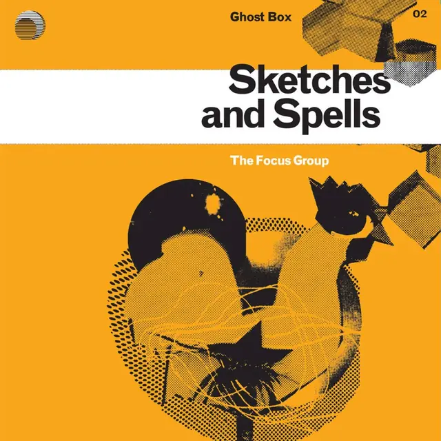
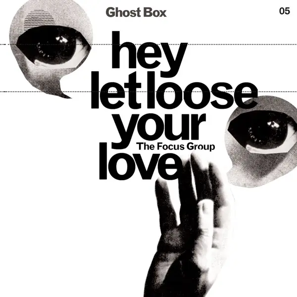
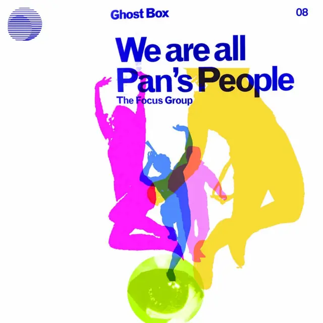
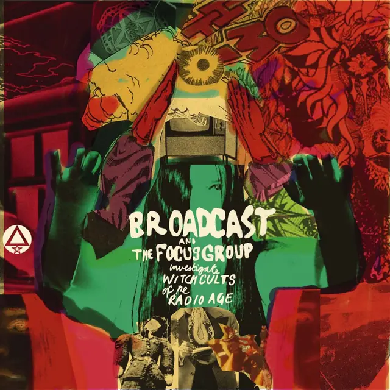
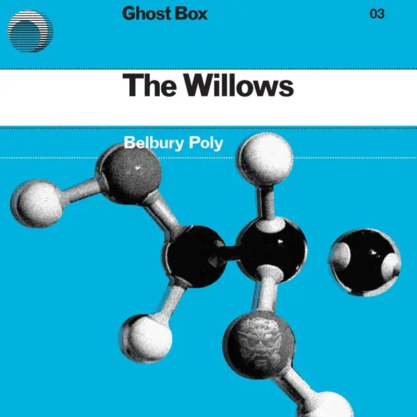
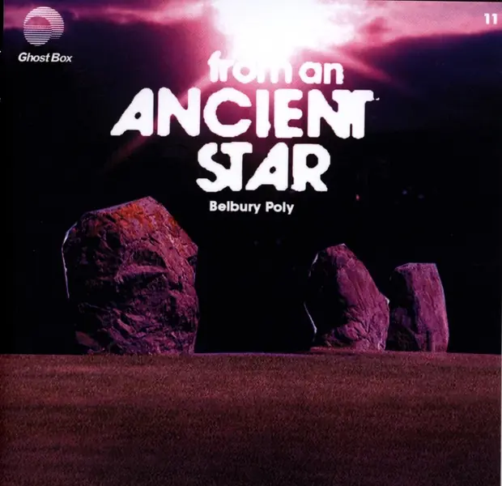
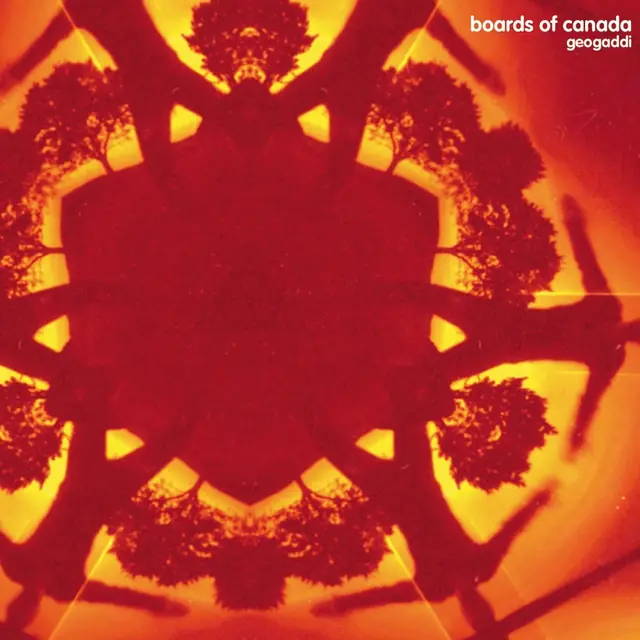
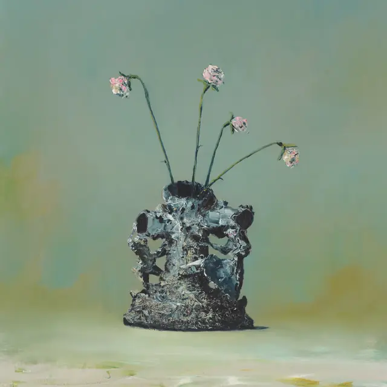
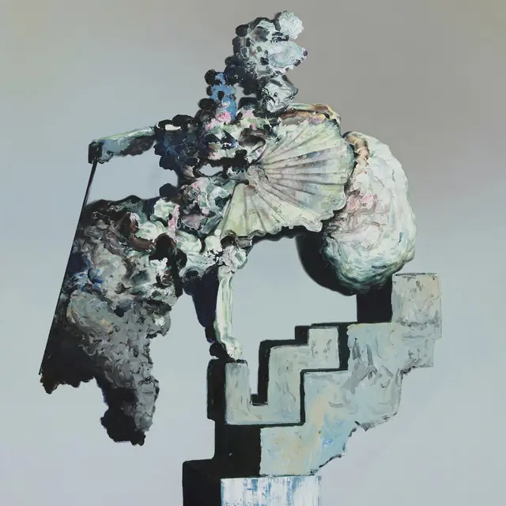
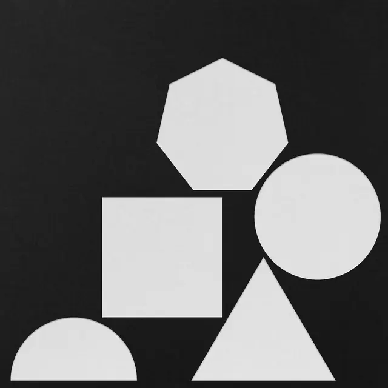
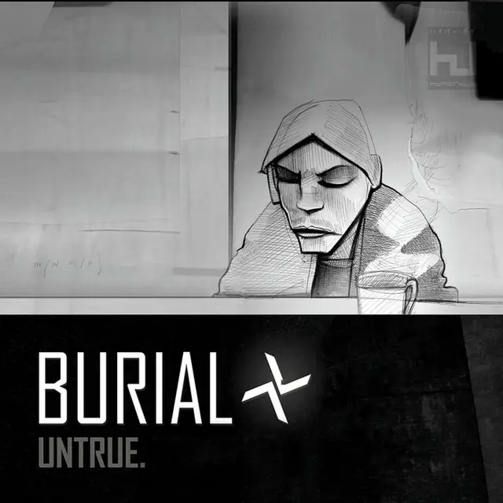
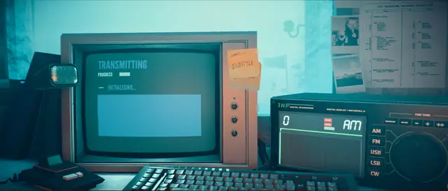
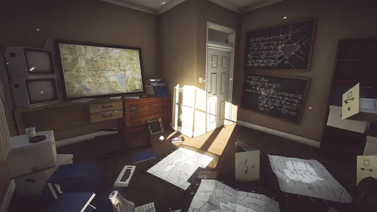
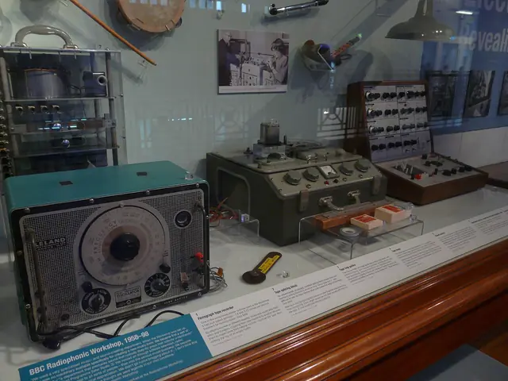
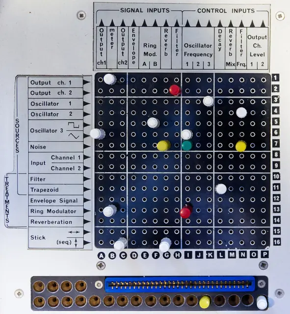
Games
- Sir, You Are Being Hunted
Robots in tweed on a British moor. Study how it stays comic and unsettling at once.
- Everybody's Gone to the Rapture
An English village in the 1980s with its people gone. Study how radios, telephones and moving light tell the story.
- Stories Untold
Four short horror episodes on 1980s machines, including the Futuro, a home computer No Code made up from a ZX Spectrum.9
- Control
Study a government bureau full of old office technology, and its unsettling puppet show.
Film, art and more
- Hauntology in music
A good starting point, with names and dates.
- Ghost Box Records
Look at the sleeves together: the catalogue is planned as one numbered series.2
- BBC Radiophonic Workshop
Tape loops, splicing and borrowed test oscillators, for BBC radio and television.12 Ghost Box count its composers as key figures.2
- The Stone Tape
Nigel Kneale's BBC ghost play, in which old stones have recorded the past. Study it as a parallel.
- Children of the Stones
A children's serial about a stone circle. Julian House says the places he grew up had the same off-kilter feel.1
- Lonely Water
A short public information film about the dangers of water. Study its calm, sinister narration.
- Ghosts of My Life
Mark Fisher's writings on depression, hauntology and lost futures.3
- Inferno
Boards of Canada's newest album. Compare it with Music Has the Right to Children.
Sources
- 1Magical Unrealism: Julian House Of Focus Group Interviewed
- 2Haunted Audio, a/k/a Society of the Spectral: Ghost Box, Mordant Music and Hauntology
- 3The Metaphysics of Crackle: Afrofuturism and Hauntology
- 4Ghost Box: Unearthly Realms
- 5Jacques Derrida
- 6Boards Of Canada interviewed: “We’re too busy to give a shit!”
- 7What Happens When TikTok Looks To The Avant-Garde For A Challenge?
- 8Self-Initiated House Music
- 9Crafting the unique, genre-defying horror of Stories Untold
- 10The Story Of The BBC Radiophonic Workshop
- 11Boards of Canada reveal studio processes behind Tomorrow’s Harvest, hint at collection of early material
- 12The birth of the Radiophonic Workshop
- 13Fragments of a conversation with Julian House
- 14‘Inventions For Radio’: The Mother Of Inventions